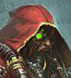

В то время, как Адептус Механикус являются частью Империума, они развились отдельно от него и пользуются определённой степенью независимости. Благодаря огромной власти, которую они имеют, Адептус Механикус можно считать скорее союзной империей, нежели организацией внутри Империума. Адептус Механикус также исповедуют другую религию, нежели остальная часть Империума.
Символом Адептус Механикус является череп, наполовину костяной, наполовину механический, расположенный на фоне чёрно-белой шестерни. Адепты Адептус Механикус известны как техножрецы. Любой член Культа Механикус выше ранга слуги является техножрецом, хотя к магосам и прочим высокопоставленным техножрецам обращаются по их рангу.
Как и подобает религиозной природе Механикус, техножрецы обычно носят робы, чаще всего ржаво-красные или белые. Техножрецы кибернетически аугментированы. Уровень аугментации техножреца сильно зависит от его ранга в Культе Механикус: новичок может иметь одну или две аугментированные системы, в то время как старшие ранги могут иметь лишь несколько биологических органов в своём полностью металлическом теле.
| dfdfdffd | dfdfdfdfdfdfdf | |||
|  | dfdfdfddfdfdffdfdf | |||
| dfdfdfdfdfdffdfdf | ||||
| dfdfdffdfd | dfdfdfdfdf | dfdfdfdff | ||
| dfdfdfdfdf | dfdfdfdfdf | dfdfdfdfdff | ||
| dfdfdfdfdfdf | dfdfdfdfdfd | dfdfdfdfdf | ||